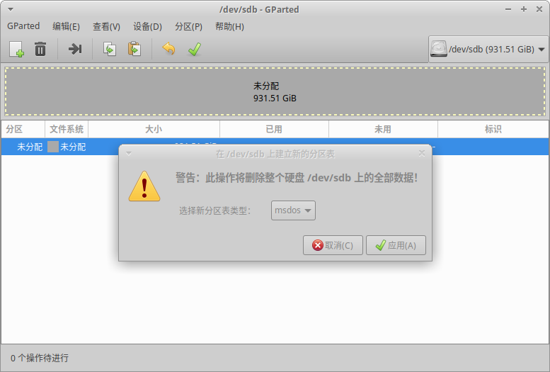
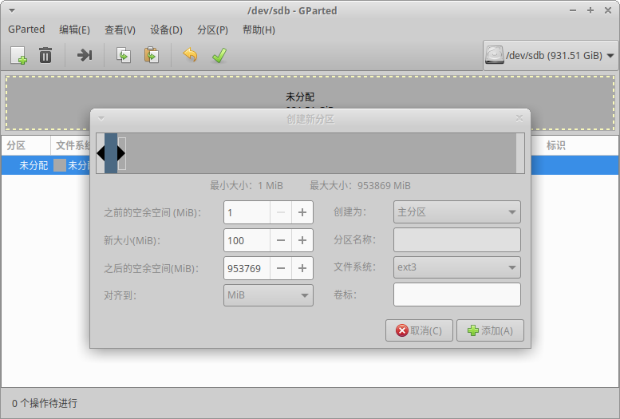
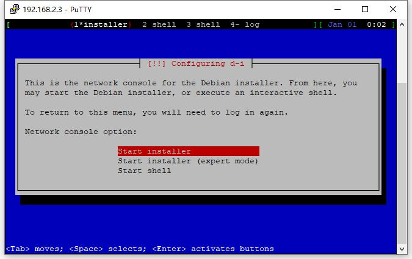
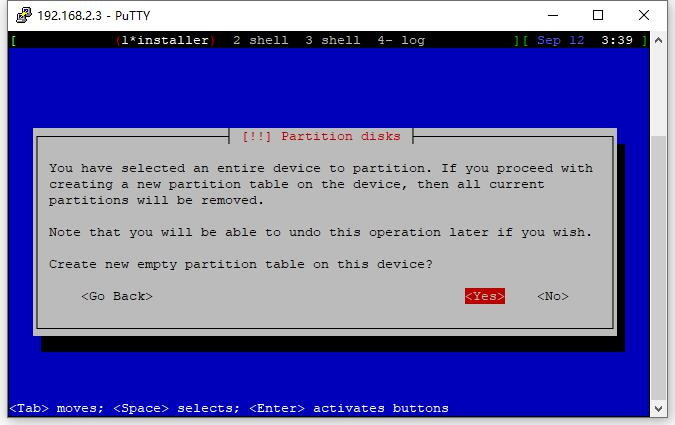
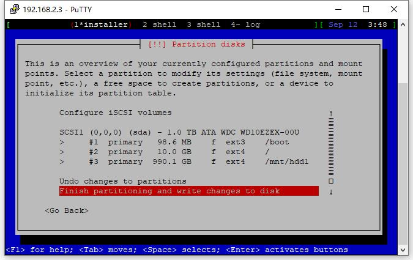

2020-09-03技术
已经2020年了，居然还在折腾这个2013年的NAS。。。
一个新的在 Buffalo LS410D 上安装 Debian 的完美方法，完全不依赖原生固件。
原项目 Debian on Buffalo 兼容了几乎所有的 Buffalo NAS型号，本文只针对 LS410D 的安装流程做一个记录。
安装器的运行方式有三种：
我选用了第2种，使用一块空白的硬盘进行安装。
原项目地址: https://github.com/1000001101000/Debian_on_Buffalo
需要准备以下东西

对硬盘进行分区，分区表 MBR 或者 GPT 都可以

建一个分区用于存放安装器
这个分区必须是磁盘上的第一个分区，格式为 EXT2 或者 EXT3，最好使用EXT3
分区大小原文说1GB差不多，但是我试了100MB也是可以的
分区建好以后挂载上，然后把前面下载的两个安装器文件复制到这个分区上
准备工作完毕，可以把硬盘卸下装回 LS410D 了
LS410D通电启动，正常启动（白灯常亮）后等一会儿就可以通过 SSH 连接了
SSH 的用户名为 installer，密码为 install

登陆成功后就能看到安装器了，接下来就是一步一步安装 Debian 了，流程和平时安装 Debian 基本一致
其他步骤就不多做介绍，主要是磁盘分区这一步有几个注意点
之前准备工作建立的存放安装器的分区此时已经启动起来，后续用处不大，所以此时可以直接把整个磁盘重新分区
可以简单粗暴一些，直接重建分区表

注意点

我的磁盘分区如上图，主要是 /boot 挂载点需要多注意一下
对风扇、按钮、和LED做一些设置
风扇
风扇使用PWN调速，安装 fancontrol
apt-get install fancontrol
然后 pwmconfig 设置好温度对应的转速就OK了。
按钮
按钮为GPIO按钮，安装 triggerhappy
apt-get install triggerhappy
监听按钮命令
thd --dump /dev/input/event*
然后按 LS410D 上的按钮就可以知道各个按钮的名称了
后面的电源开关为 KEY_ESC，1为ON，0为OFF
前面板按钮为 KEY_OPTION，按下时为1，弹起时为0
给电源开关添加关机功能
vi /etc/triggerhappy/triggers.d/ls410d.conf
+ KEY_ESC 0 poweroff
先启用一下rc.local，不习惯systemd
cat > /etc/rc.local <<EOF
#!/bin/sh
exit 0
EOF
chmod +x /etc/rc.local
systemctl enable rc-local
systemctl start rc-local
设置自启动
vi /etc/rc.local
+ thd --daemon /dev/input/event0 --triggers /etc/triggerhappy/triggers.d/ls410d.conf
LED
四个控制LED亮度的文件：
四个控制LED行为的文件：
LED可以用来指示硬盘、网络等状态，默认 led:function:white 用来指示硬盘活动
关闭电源指示灯
echo 0 > /sys/class/leds/led\:power\:white/brightness